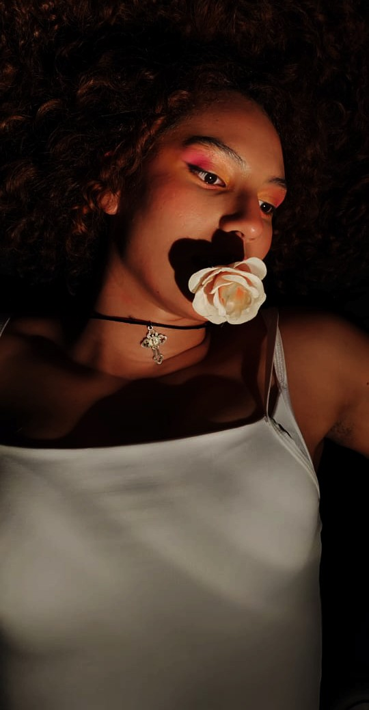
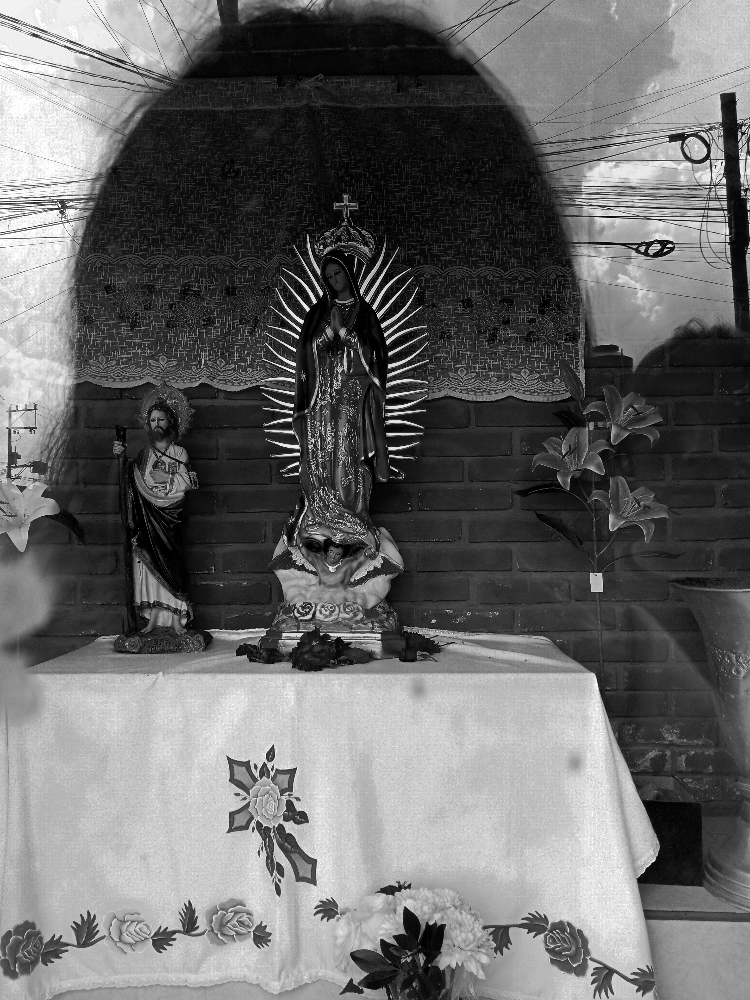
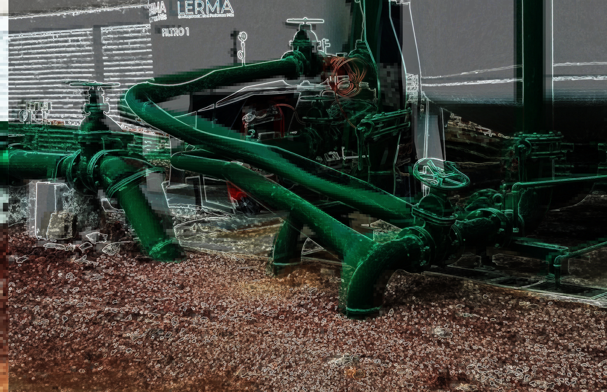
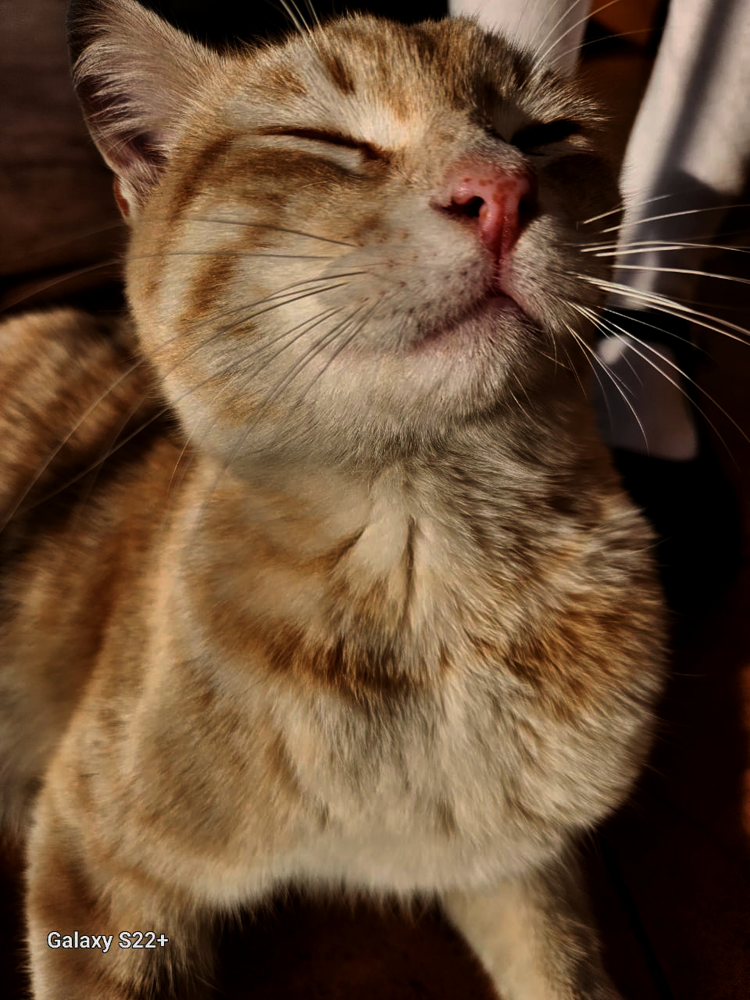

Autor: Gabriela Álvarez
Año:2021-2024
Esta serie de imágenes surge de un proceso de exploración académica que abarca el paisaje, el retrato y la abstracción total. Aunque cada pieza nació de una asignación distinta, todas están unidas por una intervención personal que busca transformar lo académico en una expresión propia. A través de la deformación y la manipulación de la imagen, me alejo de la representación tradicional para mostrar mi estilo particular. Mi intención no es solo cumplir con el registro de lo que veo, sino reinterpretar lo que me rodea ya sea un rostro o un entorno bajo mi propia perspectiva y sensibilidad visual.